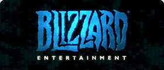

Qui sont les acteurs majeur du monde de l’esport ?
Les jours où le jeu vidéo compétitif faisait figure de marché de niche peu attrayant ne sont pas si loin. Il n’y avait pas vraiment d’« industrie » eSport et la planète dans son ensemble n’étaient pas consciente du fait que des gens jouaient aux jeux vidéo dans des tournois officiels. Toutefois, au cours des dernières années, la popularité des eSports a véritablement explosé. Le jeu vidéo compétitif est à présent considéré comme un vrai sport, et les joueurs professionnels sont reconnus comme étant des athlètes. Ils sont nombreux parmi les meilleurs joueurs à être de véritables stars avec des légions de fans à travers le globe.
Ces joueurs ont aidé à créer une industrie eSport florissante. Ils ne sont cependant pas les SEULS contributeurs puisqu’il existe beaucoup d’autres acteurs au sein des eSports. Beaucoup d’entreprises, d’organisations et de personnes ont joué un rôle dans la mise en place de la scène professionnelle eSport. Leurs contributions ne devraient pas être négligées.
Dans cet article, nous expliquons tout au sujet des acteurs essentiels de l’industrie eSport. Nous donnons aussi des détails sur quelques entreprises et personnes qui font partie de ces acteurs. Veuillez noter que nous ne parlons pas des joueurs ici. La raison est simple, nous leur consacrons une autre page tout entière.
Développeurs et éditeurs de jeu.
Nous commençons par les développeurs et les éditeurs pour une bonne raison. Les eSports n’existeraient tout simplement pas sans eux. Ce sport repose (clairement) sur les jeux vidéo, il est donc évident que les entreprises qui ont créé et distribué ces jeux ont eu un rôle important.
Bien évidemment, l’ENSEMBLE des développeurs de jeu ne créent pas de jeux eSports. Bien que la montée du jeu vidéo compétitif a eu un impact certain sur l’industrie du jeu en général, seul un petit nombre de développeurs sont véritablement dévoués au eSport pour le moment.
C’est déjà quelque chose qui est en train de changer. Le potentiel à long terme des eSports n’est plus en doute et de plus en plus de développeurs s’en sont aperçu ces dernières années. À l’heure actuelle, il y a peu de développeurs que l’on peut considérer comme des contributeurs MAJEURS de l’industrie eSport.
Trois entreprises peuvent toutefois être considérées comme tel : Blizzard Entertainment, Riot Games et Valve Corporation. Elles ont créé plusieurs des jeux eSports les plus importants qui sont actuellement utilisés au niveau professionnel.
VALVE CORPORATION
Valve Corporation possède plusieurs titres à son actif, dont deux en particulier ont fait forte impression dans le jeu compétitif. Counter-Strike: Global Offensive et Dota 2 sont parmi les jeux eSports les plus populaires en ce moment.

RIOT GAMES
Créé en 2006, Riot Games est l’entreprise derrière l’incroyable succès qu’est League of Legends. Ce jeu multijoueur en ligne possède plus de 100 millions de joueurs enregistrés et à un rôle GIGANTESQUE sur la scène eSport.
BLIZZARD ENTERTAINMENT
Blizzard Entertainment fait des jeux vidéo depuis 1991. Son jeu de stratégie StarCraft II a été l’un des premiers jeux à être joué professionnellement. Elle a aussi publié d’autres jeux eSports. On compte parmi eux Heroes of the Storm et Overwatch.
